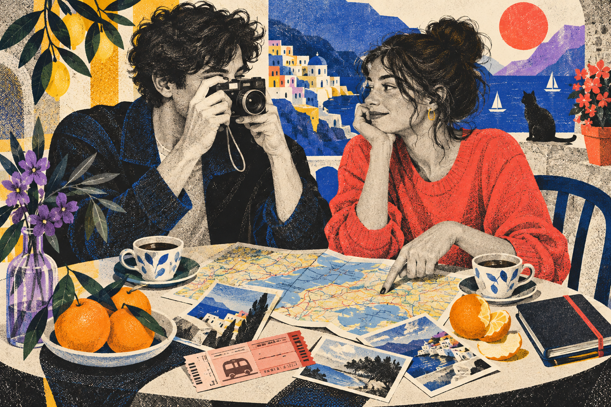
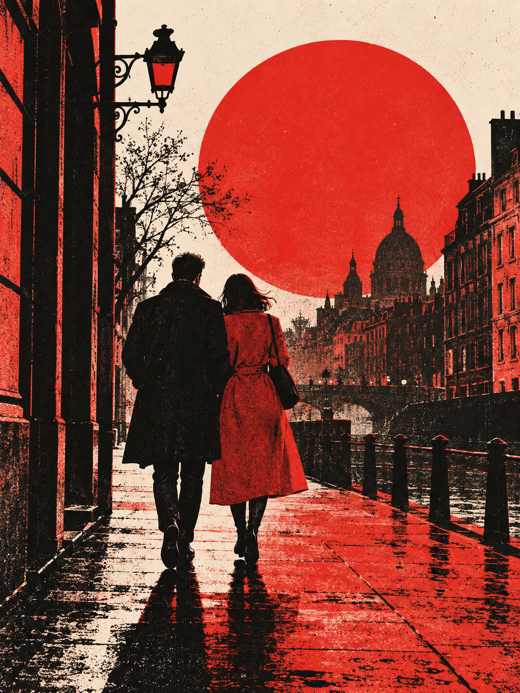

01 / 起点尚未点亮
CAMPUS · FIRST FRAME
第一次合照的地方
那时候的我们，还不知道以后会一起走过多少地方。
A LITTLE JOURNEY · FOR YOU
01 一份还不能立刻拆开的礼物
从大学里那张最早的照片开始，沿着记忆往前走。找到三条线索，最后一站才会出现。
从第一张照片出发
THE PLACES WE KEEP
每张卡片里藏着一段回忆。打开它，收下线索，地图就会亮起一站。
CAMPUS · FIRST FRAME
那时候的我们，还不知道以后会一起走过多少地方。

CITY · ORDINARY DAYS
有些平常的傍晚，因为一起走过，后来就不平常了。

SEA · ONE MORE TIME
风很大，天色慢慢暗下来，但我们都还不想走。
THE LAST STOP
还有三条线索，礼物就会出现
把地图上的三处回忆全部点亮，再回来拆开。
TO BE CONTINUED, TOGETHER. ✳